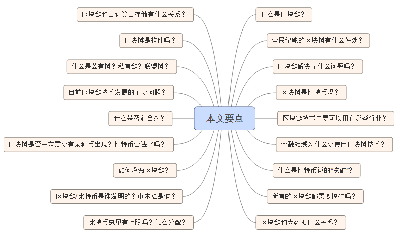

関連技術ポイント

問：ブロックチェーンとは何か？
答：ブロックチェーン（Blockchain）とは、非中央集権化とトラストレスという方式で、信頼できるデータベースを集団で維持する技術ソリューションである。わかりやすく言えば、ブロックチェーン技術とは、全員参加で記帳する方法を指す。すべてのシステムの背後にはデータベースがあり、データベースを大きな台帳と見なすことができる。では、誰がこの台帳を記帳するのかが非常に重要になる。現在は、誰のシステムであるかによって誰が記帳するかが決まり、WeChatの台帳はテンセントが記帳し、淘宝（タオバオ）の台帳はアリババが記帳している。しかし、ブロックチェーンシステムでは、システム内の誰もが記帳に参加する機会を持つ。一定の時間内にデータの変化があれば、システム内の誰もが記帳を行うことができ、システムはその時間内で最も速く、最も正確に記帳した人を評価し、その人が記録した内容を台帳に書き込み、その時間内の台帳内容をシステム内の他の全員に送信してバックアップする。こうして、システム内の全員が完全な台帳を一冊持つことになる。このような方法を、私たちはブロックチェーン技術と呼ぶ。
問：このような全員参加型記帳のブロックチェーンにはどのような利点があるのか？
答：わかるように、これは少しの効率を犠牲にしながら、獲得しているのは極めて高い安全性。まず、中央の大きな台帳は存在しないため、破壊することができない。各ノードは単なるシステムの一部であり、各ノードの権利は平等で、全く同じ台帳を持っている。一部のノードを破壊してもシステムには全く影響がない。次に、不正はできない。なぜなら、システム内の大多数の人のコンピュータを制御して修正しない限り、システムは多数者の意見を参照して何が真実の結果かを決定するため、自分の台帳を修正しても全く意味がないことが分かるからである（他の人が認めないため）。また、中央集権的な仲介機関が存在しないため、すべてのものを事前に設定されたプログラムで自動実行させることができ、コストを大幅に削減できるだけでなく、効率も向上できる。そして、誰もが同じ台帳を持っているため、台帳の記録プロセスが公開・透明であることを保証できる。
問：ブロックチェーンは何を解決したのか？
答：ブロックチェーンが最も重要なのは、仲介者の信用問題を解決したことである。過去には、互いに知らず信頼もしていない二人が協力することは難しく、第三者に頼る必要があった。例えば支払い行動では、過去のどのような送金にも銀行や支付宝（アリペイ）のような機関が存在する必要があった。しかし、ブロックチェーン技術によって、ビットコインは人類史上初めて、いかなる仲介機関も関与せずに、双方が互いに信頼できる送金を実現した。これはブロックチェーンの大きなブレークスルーである。
問：ブロックチェーンはビットコインなのか？それともビットコインはブロックチェーンなのか？
答：ブロックチェーン技術はビットコインの基盤技術であり、初期にはビットコインの基盤技術に気づく人はあまりいなかった。しかし、ビットコインが中央集権的な機関による運営・管理なしに、長年にわたって非常に安定して稼働し、何の問題も発生しなかったことで、多くの人がこの基盤技術には大きな仕組みがあるかもしれないと気づき、ビットコインだけでなく、多くの分野でこの技術を応用できるかもしれないと考えた。そこで、ビットコインの技術を抽象化して取り出し、ブロックチェーン技術、あるいは分散型台帳技術と呼ぶようになった。したがって、ある観点から見れば、ビットコインはブロックチェーンの最初の応用と見なすことができ、ブロックチェーンはTCP/IPのような基盤技術に近く、今後ますます多くの業界に拡大していくだろう。
問：ブロックチェーン技術は主にどのような業界で使えるのか？
答：ブロックチェーンの主な強みは、仲介者の参加が不要で、プロセスが効率的かつ透明でコストが非常に低く、データの安全性が高いことである。したがって、この3つの側面のいずれかにニーズがある業界は、ブロックチェーン技術を利用する機会がある。
問：金融分野ではなぜブロックチェーン技術を使うのか？実質的な利点は何か？
答：ブロックチェーン技術が金融分野で持つ主な利点は、仲介排除（ディスインターミディエーション）と大幅なコスト削減である。
まず、金融業界は現在、単一障害点やシステムリスクを防ぐために、何重もの監査を行って金融リスクを管理しているが、そのために高い内部コストが発生している。また、規制が増え続けていること、特に2008年の金融危機によって金融管理のハードルが上昇し、テロとの戦いによりマネーロンダリング対策とテロ資金供与対策の範囲も広がり、監督の広さと深さが次第に拡大しているため、金融システム全体の監督コストが急激に増加している。このような状況下で、ブロックチェーン技術は改ざん防止と高い透明性によって金融システム全体のコストを大幅に削減できる。スペイン最大の銀行サンタンデールが発表したレポートによると、2020年頃に世界中の銀行が内部でブロックチェーン技術を使用すれば、年間約200億ドルのコストを節約できるとされている。このようなデータは、「ブロックチェーン」が従来の金融分野にもたらす大きな変革と突破を十分に示している。
さらに、歴史的な理由により、従来の金融機関は決済や清算を中央決済所に依存しており、そのために効率が低いという問題が生じている。従来の国際決済はSWIFTのような機関を経由する必要があるため、国際電信送金はしばしば日単位で計算される。しかし、ビットコインはブロックチェーン技術を使用する際、中央集権的な運営機関がまったくない状態で7年間完璧に稼働し、リアルタイムの決済・清算を実現しただけでなく、一筆の帳簿エラーも発生しなかった。したがって、すべての金融システムが分散型のリアルタイム決済・清算を実現できれば、世界の金融効率が大幅に向上するだけでなく、それによって世界の金融構造を変えることができる。
問：ビットコインでいうところのマイニング？
答：ビットコインにおける「マイニング」は実際には記帳のプロセスであり、ビットコインの演算は「Proof of Work（PoW、作業証明）」と呼ばれるメカニズムを採用している。システムは誰がより強力な計算能力を持つかを判定するために、毎回数学の問題を出し、最も早くその問題を解いたコンピュータだけが記帳を行うことができる。そして、記帳権を獲得したコンピュータは25ビットコインの報酬を得る。通常、この行為を「マイニング」と呼び、得たビットコインをマイニング成功の報酬とみなす。
問：すべてのブロックチェーンはマイニングを必要とするのか？
答：すべてのブロックチェーンプロジェクトがビットコインのような「Proof of Work（作業証明）」方式を採用するわけではない。これはどちらかというと初期のブロックチェーンプロジェクトに見られる。他の証明メカニズム、例えば「Proof of Stake（PoS、プルーフ・オブ・ステーク）」、「Delegate Proof of Stake（DPoS、デリゲート・プルーフ・オブ・ステーク）」を採用する場合は、このようなマイニング方式を取る必要はない。
問：ブロックチェーンとビッグデータの関係は？ブロックチェーンはビッグデータに取って代わるのか？
答：ブロックチェーンとビッグデータの関係はそれほど大きくない。ビッグデータは主に大量のデータを管理するものであり、ブロックチェーンの核心は、中央集権的な仲介機関が介在しない状態でデータの高い安全性と信頼性を実現することである。したがって、ブロックチェーンとビッグデータは互いに矛盾せず、取って代わることもなく、まったく異なるシーンに対するデータの異なる解決策である。
問：ブロックチェーンとクラウドコンピューティング／クラウドストレージの関係は？ブロックチェーンはクラウドコンピューティングやクラウドストレージなのか？
答：クラウドコンピューティングは通常、インターネットを通じて動的で拡張が容易で、しばしば仮想化されたリソースを提供するものと定義されるが、クラウドコンピューティングプラットフォームを提供するのはたいてい中央集権的な機関である。一方、ブロックチェーンで構成されるネットワークには一般的に特定の機関が存在しないため、ブロックチェーンは分散コンピューティングシステムの定義により近く、分散コンピューティングの一種に属する。ただし、ブロックチェーンはクラウドストレージを実現可能であり、現在の中央集権的なクラウドストレージスペースの提供とは異なり、ブロックチェーンには分散型のクラウドストレージソリューションを提供するものもある。そのようなプロジェクトには、Storj、Sia、Maidsafeが含まれる。
問：ブロックチェーンはソフトウェアなのか？どんなプログラムで書かれているのか？
答：ブロックチェーンは特定のソフトウェアではない。「データベース」という言葉が示す意味と同じように、特定の技術の設計思想である。ほとんどの言語で実装でき、実装方法もさまざまである。さらに、ブロックチェーン技術は現在急速に発展しており、相対的に言えば、現時点でのブロックチェーン技術の設計思想はまだ比較的単純だが、将来はますます複雑になるかもしれない。
問：パブリックチェーンとは？プライベートチェーンとは？コンソーシアムチェーンとは？
答：パブリックチェーンどのノードも誰に対しても開放されており、誰でもこのブロックチェーンに参加して計算に加わることができ、また誰でも完全なブロックチェーンデータ（すべての台帳）をダウンロードして取得することができる。しかし、ブロックチェーンの応用シーンによっては、このシステムに誰でも参加できることや、誰でもすべてのデータを閲覧できることを望まない場合もある。許可されたノードだけが参加し、すべてのデータを閲覧できるようにしたいのだ。このようなブロックチェーン構造を、我々は…と呼ぶ。私有链。
コンソーシアムチェーンとは、各ノードが参加する権限が完全に対等であり、互いに完全に信頼し合う必要がない状態でデータの信頼できる交換を実現できるものを指す。R3が構成する銀行ブロックチェーン連盟が構築しようとしているのは、まさに典型的な…である。联盟链。
しかし、ブロックチェーン技術の急速な発展に伴い、今後はパブリックチェーンとプライベートチェーンの境界があいまいになる可能性を排除できない。各ノードは比較的複雑な読み書き権限を持つことができるため、一部の権限を持つノードはすべての人に開放され、一部の記帳や中核的な権限を持つノードは許可されたノードにのみ開放されるということもあり得る。その場合、純粋なパブリックチェーンでもプライベートチェーンでもなくなるだろう。
問：現在のブロックチェーン技術発展における主な問題は？
答：現在、ブロックチェーン技術はまだ非常に初期の段階にあり、統一された技術標準はまだ形成されておらず、さまざまな技術案も急速に発展している最中である。しかし、かつてブロックチェーン技術に基づくシステムは非常にリソースを消費する（ビットコインに類似）と考えられていたことや、ブロックチェーン技術のシステムにはデータ処理に制限があるといった問題は、すでに技術的に突破口が開かれている。しかし、ブロックチェーン技術の拡張性については、まだ大規模な実践による検証を経ておらず、現在は主にプロトタイプ設計の段階に留まっている。
定量的に分析できなければ、ブロックチェーン技術が我々にもたらす実際の利益、つまり節約できる資金や生み出す価値について、金融業界は短期的には依然として比較的慎重な姿勢を保つだろう。結局のところ、現在の世界の金融インフラへの投資はすでに数兆ドルを超えており、まったく新しい金融アーキテクチャと基盤となる運用システムを構築するには、実際のデータによる裏付けが必要である。既存の技術がまだ導入され、ユースケースが得られていない状況では、節約できる総額を確定するのは非常に難しい。これについては今に至るまで、資本市場のエコシステムが毎日直面する数兆ドル規模の取引を処理するために、十分に強力なブロックチェーンプラットフォームを構築するには、一体どれだけの資金が必要なのかという大きな疑問が依然として存在する。
さらに、ブロックチェーン業界は人材が極めて不足している。缺少大量既了解区块链技术，又了解金融的多方面人才，市场正在拼命寻找可以连接两个世界的人才，需要能够在现实世界中，将区块链技术能够在资本市场中实现，并且实现更好的功能。而需要建立基于区块链技术的全新系统，必然是需要这样的跨界人才。
問：スマートコントラクトとは何か？
答：スマートコントラクトコンピュータ言語を用いて法律言語の代わりに条項を記録する契約である。スマートコントラクトは、コンピュータシステムによって自動的に実行することができる。ブロックチェーンがデータベースであるならば、スマートコントラクトはブロックチェーン技術を現実に応用することを可能にするアプリケーション層である。従来の契約は、一般に、契約内容を実行するコンピュータコードと直接的な関係はない。紙の契約書はほとんどの場合保管されるが、ソフトウェアはコンピュータコード形式で書かれた契約条項を実行する。スマートコントラクトの潜在的な利点には、契約の締結、執行、監視にかかるコストの削減が含まれる。そのため、多くの低価値取引に関連する契約にとって、これは人件費を大幅に削減することになる。
問：スマートコントラクトはどう使うのか？
答：中央銀行がブロックチェーンを通じて法定通貨を発行できるのであれば、スマートコントラクト技術を利用して、コードを法定通貨の発行行為に組み込むこともできる。その場合、この法定通貨は…と呼ぶことができる。プログラマブルマネー例えば、中央銀行がある一部の資金を農業関連の口座に振り込むよう指定した場合、その資金に相応のプログラムを書き込み、その資金が農業関連の口座にのみ入金されるように指定することができる。そうすれば、その資金はいかなる状況でも他の口座に流用されることはあり得ない。もし大部分の通貨が「プログラマブル通貨」になれば、それらが構成する金融環境は次のようになると想像できる。プログラマブルファイナンス。
問：ブロックチェーンと一般の人にはどんな関係があるのか？
答：基本的にはほとんど関係がない。特にこの分野で起業を予定しているのであれば別だが。これはTCP/IPプロトコルと一般人の関係と同じで、一般人はインターネットの基盤となるTCP/IPプロトコルが何であるかを知る必要はまったくなく、インターネットが提供するサービスを享受するだけでよい。
問：ブロックチェーンプロジェクトには必ず何らかのコインが必要なのか？
答：いいえ。ビットコイン自体は支払いシステムとして機能するため、価値を測定するためのツールが必要であり、それゆえにビットコインが存在しなければならない。さらに、より多くの人が自分のコンピュータをシステムの計算に提供することを奨励するために、ビットコインによる報酬が必要である。一方、一部のプライベートチェーンのシステムでは、専用の資産を取引用に設計することができ、各ノードは計算に参加することが必須であり、それは彼らの責任であると同時に権利でもある。そのため、報酬によって参加を促すことを考慮する必要がなく、このようなシステムでは、何らかのコインを設計する必要がなくなる可能性がある。
問：ビットコインは現在合法になったのか？
答：ビットコインは、中国を含む世界の主要国において、常に完全に合法である。一部の悪質なメディアの誤った情報により、中国がかつてビットコインを違法と宣言したと思っている人が多い。実際には、2013年12月5日に中国人民銀行など五つの省庁が発表したビットコインリスクの防止に関する通知に明確に定められているとおり、ビットコインは特定の仮想商品であり、一般の人々は自己責任を前提として参加する自由を有する。一方、各種金融機関および決済機関は、ビットコイン関連の金融サービスを提供したり、ビットコインを投資対象とすることはできない。ビットコインはドイツでは通貨単位として扱われ、米国ではコモディティ（商品）と定義されている。EU裁判所はビットコインを支払い手段とみなし、付加価値税を課す必要はないと判断した。
問：XXコインに投資できるか？ブロックチェーンプロジェクトか？ねずみ講か？
答：現在、ビットコインを含むすべてのデジタル通貨は非常に高いリスクを抱えており、ブロックチェーン技術自体もまだ始まったばかりの段階にあり、すべてのブロックチェーンプロジェクトも非常に高いリスクを伴っている。一般の人がデジタル通貨やブロックチェーン関連のプロジェクトに投資することは推奨されない。さらに、デジタル通貨とブロックチェーンには一定の技術的ハードルがあり、一般の人々は本物のプロジェクトとマルチ商法（ねずみ講）プロジェクトを見分けることができない。したがって、一般の人々はこのようなプロジェクトに一切投資しないことをお勧めする。マルチ商法かどうか見分けられないプロジェクトは、すべてマルチ商法のプロジェクトとして扱ってください。
問：ブロックチェーンにどう投資するのか？
答：ほとんどのブロックチェーンは立ち上げ段階にあり、主要なものは海外にある。国内の優れたブロックチェーンプロジェクトは非常に非常に少ない。そのため、専門家以外の人がブロックチェーンプロジェクトに投資することは推奨されない。ブロックチェーン技術に強い関心があり、自ら技術系または金融系の背景があるなら、この分野での起業を検討することをお勧めする。
問：ブロックチェーン／ビットコインは一体誰が発明したのか？中本聡は日本人なのか？アメリカ政府の陰謀なのか？
答：ビットコインは「サトシ・ナカモト」と名乗る人物またはチームによって創造され、ビットコインプロジェクトの初期段階で完全にこのプロジェクトから退いている。「サトシ・ナカモト」が日本人である可能性は非常に低い。なぜなら、彼の過去の電子メールから、英語を母語とする人物であると推測できるからだ。さらに、ビットコインの創造者は現在のビットコインプロジェクトに対してまったく影響力を持っていないため、何らかの陰謀の産物である可能性は低い。「サトシ・ナカモト」が今後現れるかどうか、あるいは物理的に消滅させられるかどうかは、ビットコインに大きな影響を与えることはできない。
質問：ビットコインとQ币の違いは一体何なのか？
答：Q币は中央集権的な電子通貨であり、総量も発行方法もすべてテンセント社によって管理されている。一方、ビットコインの総量と発行方式は、プログラムと暗号アルゴリズムによって事前に設定された後、世界中の複数のノード上で動作し、誰も、いかなる機関も変更することはできず、単一の個人や機関による制御を受けない。一般にQ币は電子通貨または企業トークンと呼ばれ、ビットコインはデジタル通貨または暗号化デジタル通貨と呼ばれる。
問：ビットコインの総量に上限はあるのか？どのように配分されるのか？
答：先述のとおり、マイナーが記帳権を争うことには報酬を得るチャンスがある。当初は、システムが10分ごとに最も速く最も正確に記帳した人に50ビットコインを報酬として与えていた。そしてその50は4年ごとに半減し、おおよそ…2140年…の時点で新しいビットコインは登場しなくなり、2100万枚の上限に達することになる。その後は、取引手数料を用いてマイナーに報酬を与えることになる。
原文地址：https://yq.aliyun.com/articles/60134